pacman::p_load(tidyverse, tsibble, feasts, fable, seasonal)In-Class Exercise 07: Visualising and Analysing Time-oriented Data
1. Getting Started
The following R packages will be used.
1.1 Importing data
The code chunk below imports the visitor_arrivals_by_air.csv file into R using the read_csv() function of readr package.
ts_data <- read_csv(
"data/visitor_arrivals_by_air.csv")1.2 Preparing data
ts_data# A tibble: 144 × 34
`Month-Year` `Republic of South Africa` Canada USA Bangladesh Brunei China
<chr> <dbl> <dbl> <dbl> <dbl> <dbl> <dbl>
1 1/1/2008 3680 6972 31155 6786 3729 79599
2 1/2/2008 1662 6056 27738 6314 3070 82074
3 1/3/2008 3394 6220 31349 7502 4805 72546
4 1/4/2008 3337 4764 26376 7333 3096 76112
5 1/5/2008 2089 4460 26788 7988 3586 64808
6 1/6/2008 2515 3888 29725 8301 5284 55238
7 1/7/2008 2919 5313 33183 9004 4070 80747
8 1/8/2008 2471 4519 27427 7913 4183 66625
9 1/9/2008 2492 3421 21588 7549 3160 52649
10 1/10/2008 3023 4756 25112 7527 2983 54423
# ℹ 134 more rows
# ℹ 27 more variables: `Hong Kong SAR (China)` <dbl>, India <dbl>,
# Indonesia <dbl>, Japan <dbl>, `South Korea` <dbl>, Kuwait <dbl>,
# Malaysia <dbl>, Myanmar <dbl>, Pakistan <dbl>, Philippines <dbl>,
# `Saudi Arabia` <dbl>, `Sri Lanka` <dbl>, Taiwan <dbl>, Thailand <dbl>,
# `United Arab Emirates` <dbl>, Vietnam <dbl>, `Belgium & Luxembourg` <dbl>,
# Finland <dbl>, France <dbl>, Germany <dbl>, Italy <dbl>, …Convert the data type of the Month-Year field from Character (chr) to Date using dmy(), and overwrite the existing Month-Year field.
ts_data$`Month-Year` <- dmy(
ts_data$`Month-Year`)ts_data# A tibble: 144 × 34
`Month-Year` `Republic of South Africa` Canada USA Bangladesh Brunei China
<date> <dbl> <dbl> <dbl> <dbl> <dbl> <dbl>
1 2008-01-01 3680 6972 31155 6786 3729 79599
2 2008-02-01 1662 6056 27738 6314 3070 82074
3 2008-03-01 3394 6220 31349 7502 4805 72546
4 2008-04-01 3337 4764 26376 7333 3096 76112
5 2008-05-01 2089 4460 26788 7988 3586 64808
6 2008-06-01 2515 3888 29725 8301 5284 55238
7 2008-07-01 2919 5313 33183 9004 4070 80747
8 2008-08-01 2471 4519 27427 7913 4183 66625
9 2008-09-01 2492 3421 21588 7549 3160 52649
10 2008-10-01 3023 4756 25112 7527 2983 54423
# ℹ 134 more rows
# ℹ 27 more variables: `Hong Kong SAR (China)` <dbl>, India <dbl>,
# Indonesia <dbl>, Japan <dbl>, `South Korea` <dbl>, Kuwait <dbl>,
# Malaysia <dbl>, Myanmar <dbl>, Pakistan <dbl>, Philippines <dbl>,
# `Saudi Arabia` <dbl>, `Sri Lanka` <dbl>, Taiwan <dbl>, Thailand <dbl>,
# `United Arab Emirates` <dbl>, Vietnam <dbl>, `Belgium & Luxembourg` <dbl>,
# Finland <dbl>, France <dbl>, Germany <dbl>, Italy <dbl>, …We use ts() function from tsibble to convert from a typical data frame into a time series tibble object
ts_data_ts <- ts(ts_data)
head(ts_data_ts) Month-Year Republic of South Africa Canada USA Bangladesh Brunei China
[1,] 13879 3680 6972 31155 6786 3729 79599
[2,] 13910 1662 6056 27738 6314 3070 82074
[3,] 13939 3394 6220 31349 7502 4805 72546
[4,] 13970 3337 4764 26376 7333 3096 76112
[5,] 14000 2089 4460 26788 7988 3586 64808
[6,] 14031 2515 3888 29725 8301 5284 55238
Hong Kong SAR (China) India Indonesia Japan South Korea Kuwait Malaysia
[1,] 17103 41639 62683 37673 27937 284 31352
[2,] 21089 37170 47834 35297 22633 241 35030
[3,] 23230 44815 64688 42575 22876 206 37629
[4,] 17688 49527 58074 26839 20634 193 37521
[5,] 19340 67754 57089 30814 22785 140 38044
[6,] 19152 57380 70118 31001 22575 354 40419
Myanmar Pakistan Philippines Saudi Arabia Sri Lanka Taiwan Thailand
[1,] 5269 1395 18622 406 5289 13757 18370
[2,] 4643 1027 21609 591 4767 13921 16400
[3,] 6218 1635 28464 626 4988 11181 23387
[4,] 7324 1232 30131 644 7639 11665 24469
[5,] 5395 1306 30193 470 5125 11436 21935
[6,] 5542 1996 25800 772 4791 10689 19900
United Arab Emirates Vietnam Belgium & Luxembourg Finland France Germany
[1,] 2652 10315 1341 1179 6918 11982
[2,] 2230 13415 1449 1207 7876 13256
[3,] 3353 14320 1674 1071 8066 15185
[4,] 3245 15413 1426 768 8312 11604
[5,] 2856 14424 1243 690 7066 9853
[6,] 4292 21368 1255 624 5926 9347
Italy Netherlands Spain Switzerland United Kingdom Australia New Zealand
[1,] 2953 4938 1668 4450 41934 71260 7806
[2,] 2704 4885 1568 4381 44029 45595 4729
[3,] 2822 5015 2254 5015 49489 53191 6106
[4,] 3018 4902 1503 5434 35771 56514 7560
[5,] 2165 4397 1365 4427 24464 57808 9090
[6,] 2022 4166 1446 3359 22473 63350 9681class(ts_data)[1] "spec_tbl_df" "tbl_df" "tbl" "data.frame" class(ts_data_ts)[1] "mts" "ts" "matrix" "array"
Note
ts_data_ts is no longer the typical tibble dataframe.
Use ts_data to do all the necessary data preparation, before converting it to a timeseries dataframe.
1.3 Convert tibble object to tsibble object
We convert ts_data from a tibble object into tsibble object using as_tsibble() of tsibble R package.
ts_tsibble <- ts_data %>%
mutate(Month = yearmonth(`Month-Year`)) %>%
as_tsibble(index = `Month`)2. Visualising Time Series Data
First, reorganise the data frame from wide to long format using pivot_longer().
ts_longer <- ts_data %>%
pivot_longer(cols = c(2:34),
names_to = "Country",
values_to = "Arrivals")2.1 Visualising single time-series: ggplot2 methods
We use:
filter()of dplyr package is used to select records belong to Vietnamgeom_line()of ggplot2 package is used to plot the time-series line graph
ts_longer %>%
filter(Country == "Vietnam") %>%
ggplot(aes(x = `Month-Year`,
y = Arrivals))+
geom_line(size = 0.5)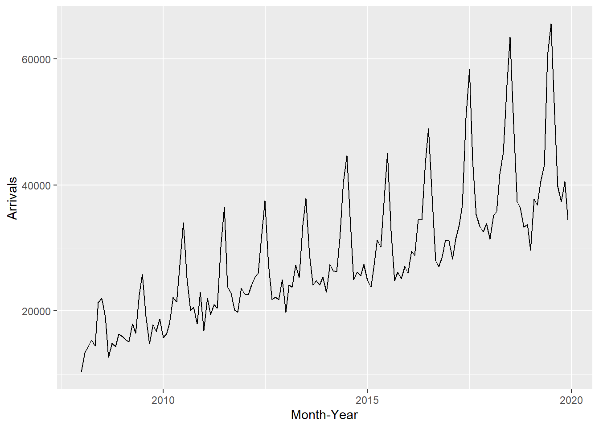
2.2 Plotting multiple time-series data with ggplot2 methods
We plot multiple time-series data without facet.
ggplot(data = ts_longer,
aes(x = `Month-Year`,
y = Arrivals,
color = Country))+
geom_line(size = 0.5) +
theme(legend.position = "bottom",
legend.box.spacing = unit(0.5, "cm"))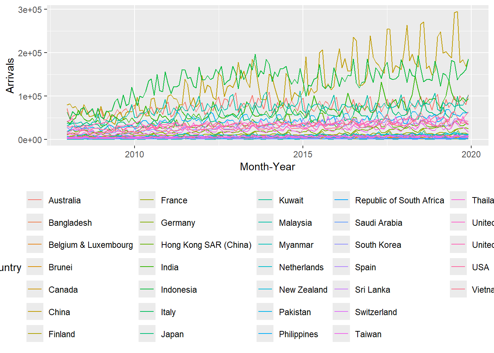
The line graph is not meaningful for comparison across countries.
We add facet_wrap() by Country.
ggplot(data = ts_longer,
aes(x = `Month-Year`,
y = Arrivals))+
geom_line(size = 0.5) +
facet_wrap(~ Country,
ncol = 3,
scales = "free_y") +
theme_bw()
Note
Number of columns and rows can be defined
ncolargument is used to defined the number of columns
scales = "free_y"argument is used to indicated flexible range for y-axis
3. Visual Analysis of Time-series Data
We plot a seasonal plot and identify individual seasons within the plot.
tsibble_longer <- ts_tsibble %>%
pivot_longer(cols = c(2:34),
names_to = "Country",
values_to = "Arrivals")tsibble_longer %>%
filter(Country == "Italy" |
Country == "Vietnam" |
Country == "United Kingdom" |
Country == "Germany") %>%
gg_season(Arrivals)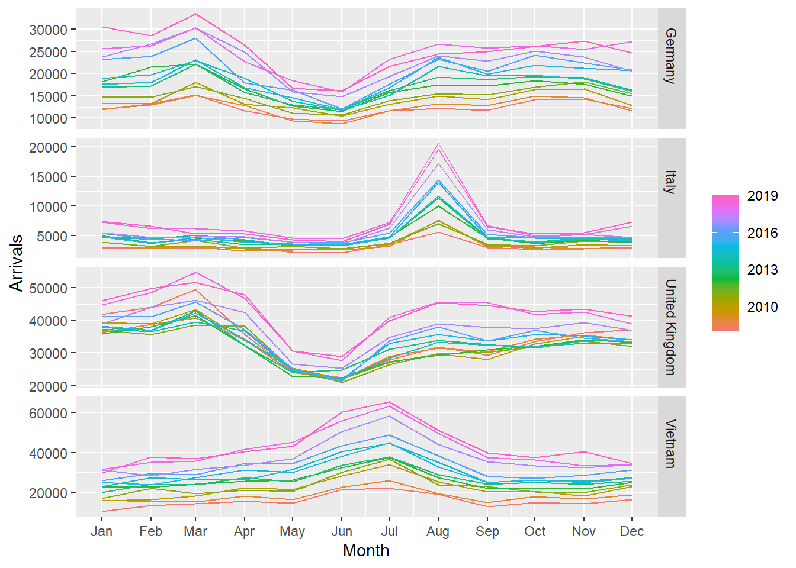
3.1 Visualise seasonality with Cycle Plot
A cycle plot shows how a trend of cycle changes over a period of time.
The following line graph shows seasonal patterns but not the trend, but this is a good starting point to view generic patterns.
tsibble_longer %>%
filter(Country == "Vietnam" |
Country == "Italy") %>%
autoplot(Arrivals) +
facet_grid(Country ~ ., scales = "free_y")
gg_subseries() of feasts package creates seasonal subseries plot. The cycle plot now shows the seasonal patterns and trend.
tsibble_longer %>%
filter(Country == "Vietnam" |
Country == "Italy") %>%
gg_subseries(Arrivals)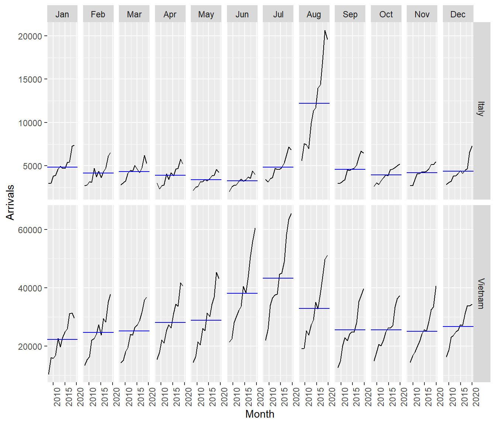
This helps to decompose the time series and help us interpret the cycle pattern.
4. Time Series Decomposition
4.1 ACF
Identify auto-correlation between time-series plots with ACF().
tsibble_longer %>%
filter(`Country` == "Vietnam" |
`Country` == "Italy" |
`Country` == "United Kingdom" |
`Country` == "China") %>%
ACF(Arrivals) %>%
autoplot()
Seasonal patterns in Vietnam repeats every 12 months
Signs of auto-correlation for China and Vietnam as the lags are statistically significant at 95% confidence interval. The auto-correlations are strong, and for Vietnam it dies down in the second cycle
Signs of trend and seasonal are strong for China and Vietnam, the only difference is in the time period
Trend is not significant for Italy and UK
Note
By default, the ACF() function returns a table of output.
The autopilot() function plots the acf output.
tsibble_longer %>%
filter(`Country` == "Vietnam" |
`Country` == "Italy" |
`Country` == "United Kingdom" |
`Country` == "China") %>%
ACF(Arrivals) #%>%# A tsibble: 84 x 3 [1M]
# Key: Country [4]
Country lag acf
<chr> <cf_lag> <dbl>
1 China 1M 0.781
2 China 2M 0.625
3 China 3M 0.623
4 China 4M 0.608
5 China 5M 0.701
6 China 6M 0.809
7 China 7M 0.658
8 China 8M 0.522
9 China 9M 0.518
10 China 10M 0.487
# ℹ 74 more rows #autoplot()4.2 PACF
tsibble_longer %>%
filter(`Country` == "Vietnam" |
`Country` == "Italy" |
`Country` == "United Kingdom" |
`Country` == "China") %>%
PACF(Arrivals) %>%
autoplot()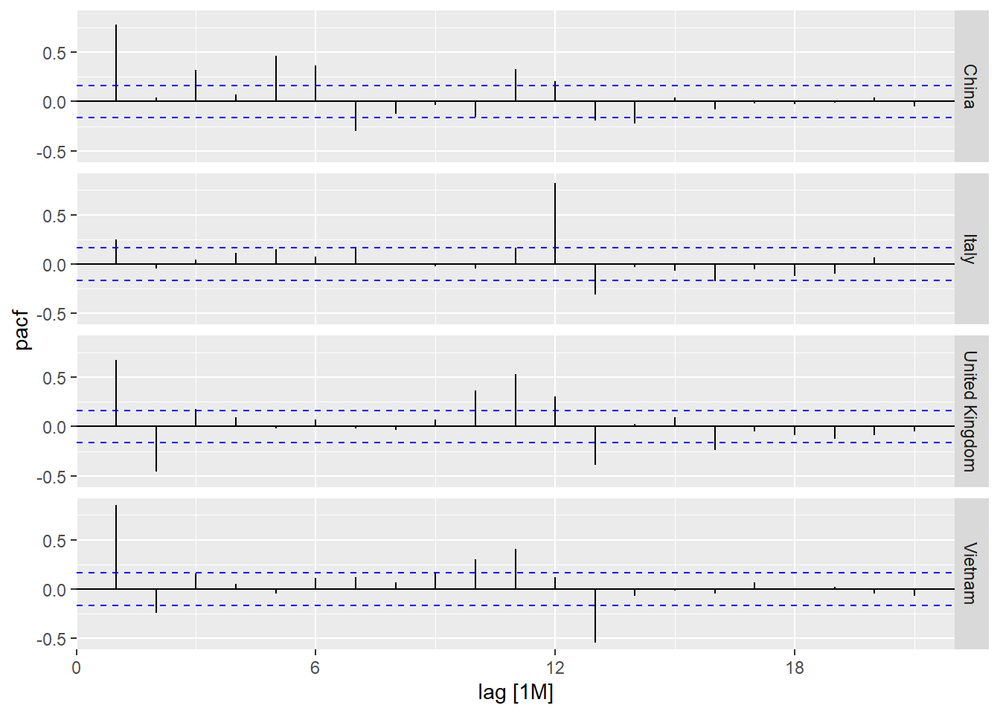
PACF for UK in lag 2 is significant but is in the opposite direction. I.e. in the 3rd period (month), the arrival will reduce significantly.
PACF for Vietnam in lag 2 is also significant and in opposite direction, but it’s not as significant as UK. In the 3rd period (month), the arrival will change but not as significant and UK.
Compare between time lag and the period with significant changes.
4.3 Composite plot of time series decomposition
tsibble_longer %>%
filter(`Country` == "Vietnam") %>%
gg_tsdisplay(Arrivals)
5. Visual STL Diagnostics with Feasts
We use STL() to perform decomposition, followed by autoplot() to plot the chart.
tsibble_longer %>%
filter(`Country` == "Vietnam") %>%
model(stl = STL(Arrivals)) %>%
components() %>%
autoplot()
We observe clear signs of seasonal pattern. Basic forecasting will work well on these patterns. If there is no trend and seasonal, e.g. straight line, can fit ARIMA and exponential. 4th chart: no clear seasonal and interval is not regular. This is white noise as it varies in different way.
If remainder gives a clear seasonal or trend, this means the decomposition is not well. Curve-fitting and ARIMA wont work. ML and deep learning is required as they will perform better.
6. Visual Forecasting
6.1 Time series data sampling
Keep the last few rows of data as hold-out data, e.g. 3 months, 6 months, 1 year, depending on the seasonal pattern. Must follow the sequence and cannot pick random set of data.
We can create an extra column Type, indicating training vs hold-out data using mutate() of dplyr package.
vietnam_ts <- tsibble_longer %>%
filter(Country == "Vietnam") %>%
mutate(Type = if_else(
`Month-Year` >= "2019-01-01",
"Hold-out", "Training"))Extract the training data using filter() function of dplyr package.
vietnam_train <- vietnam_ts %>%
filter(`Month-Year` < "2019-01-01")6.2 EDA of time-series data
vietnam_train %>%
model(stl = STL(Arrivals)) %>%
components() %>%
autoplot()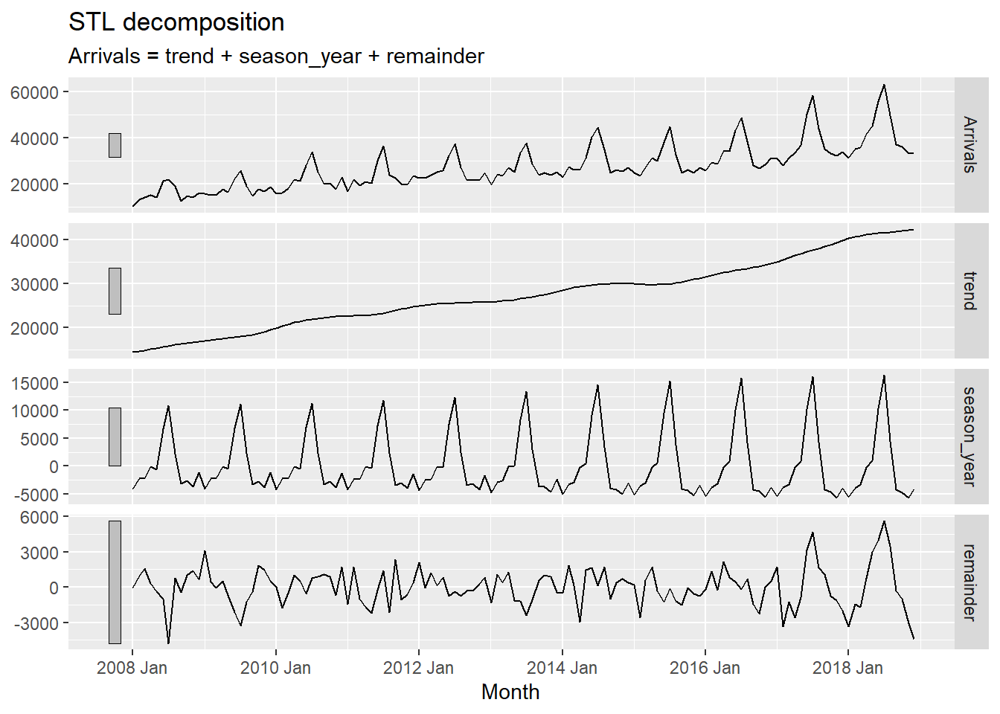
6.3 Fitting forecasting models
6.3.1 Fitting Exponential Smoothing State Space (ETS) models: fable methods
vietnam_train %>%
model(stl = STL(Arrivals)) %>%
components() %>%
autoplot()
6.3.2 Fitting Simple Exponential Smoothing (SES)
fit_ses <- vietnam_train %>%
model(ETS(Arrivals ~ error("A")
+ trend("N")
+ season("N")))
fit_ses# A mable: 1 x 2
# Key: Country [1]
Country `ETS(Arrivals ~ error("A") + trend("N") + season("N"))`
<chr> <model>
1 Vietnam <ETS(A,N,N)>6.3.3 Examine model assumptions
gg_tsresiduals(fit_ses)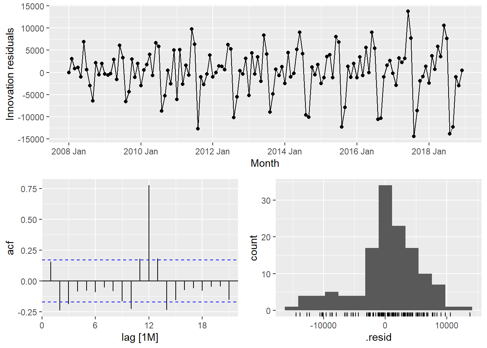
6.3.4 The model details
fit_ses %>%
report()Series: Arrivals
Model: ETS(A,N,N)
Smoothing parameters:
alpha = 0.9998995
Initial states:
l[0]
10312.99
sigma^2: 27939164
AIC AICc BIC
2911.726 2911.913 2920.374 6.3.5 Trend methods
vietnam_H <- vietnam_train %>%
model(`Holt's method` =
ETS(Arrivals ~ error("A") +
trend("A") +
season("N")))
vietnam_H %>% report()Series: Arrivals
Model: ETS(A,A,N)
Smoothing parameters:
alpha = 0.9998995
beta = 0.0001004625
Initial states:
l[0] b[0]
13673.29 525.8859
sigma^2: 28584805
AIC AICc BIC
2916.695 2917.171 2931.109 6.3.6 Damped trend methods
vietnam_HAd <- vietnam_train %>%
model(`Holt's method` =
ETS(Arrivals ~ error("A") +
trend("Ad") +
season("N")))
vietnam_HAd %>% report()Series: Arrivals
Model: ETS(A,Ad,N)
Smoothing parameters:
alpha = 0.9998999
beta = 0.0001098602
phi = 0.9784562
Initial states:
l[0] b[0]
13257.28 523.54
sigma^2: 28641536
AIC AICc BIC
2917.921 2918.593 2935.218 6.3.7 Checking results
gg_tsresiduals(vietnam_H)
gg_tsresiduals(vietnam_HAd)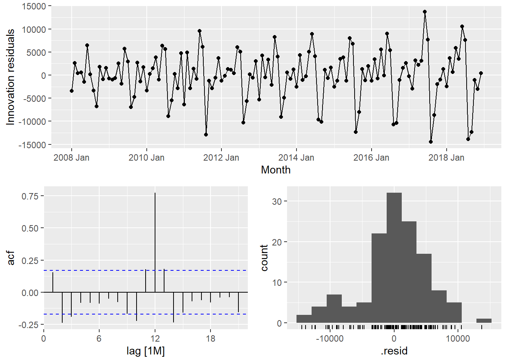
6.4 Fitting ETS Methods with Season: Holt-Winters
Vietnam_WH <- vietnam_train %>%
model(
Additive = ETS(Arrivals ~ error("A")
+ trend("A")
+ season("A")),
Multiplicative = ETS(Arrivals ~ error("M")
+ trend("A")
+ season("M"))
)
Vietnam_WH %>% report()# A tibble: 2 × 10
Country .model sigma2 log_lik AIC AICc BIC MSE AMSE MAE
<chr> <chr> <dbl> <dbl> <dbl> <dbl> <dbl> <dbl> <dbl> <dbl>
1 Vietnam Additive 5.33e+6 -1336. 2706. 2711. 2755. 4.68e6 8.56e6 1.72e+3
2 Vietnam Multiplicative 4.55e-3 -1300. 2635. 2640. 2684. 3.05e6 3.42e6 5.20e-26.5 Fitting multiple ETS Models
fit_ETS <- vietnam_train %>%
model(`SES` = ETS(Arrivals ~ error("A") +
trend("N") +
season("N")),
`Holt`= ETS(Arrivals ~ error("A") +
trend("A") +
season("N")),
`damped Holt` =
ETS(Arrivals ~ error("A") +
trend("Ad") +
season("N")),
`WH_A` = ETS(
Arrivals ~ error("A") +
trend("A") +
season("A")),
`WH_M` = ETS(Arrivals ~ error("M")
+ trend("A")
+ season("M"))
)6.6 The model coefficient
fit_ETS %>%
tidy()# A tibble: 45 × 4
Country .model term estimate
<chr> <chr> <chr> <dbl>
1 Vietnam SES alpha 1.00
2 Vietnam SES l[0] 10313.
3 Vietnam Holt alpha 1.00
4 Vietnam Holt beta 0.000100
5 Vietnam Holt l[0] 13673.
6 Vietnam Holt b[0] 526.
7 Vietnam damped Holt alpha 1.00
8 Vietnam damped Holt beta 0.000110
9 Vietnam damped Holt phi 0.978
10 Vietnam damped Holt l[0] 13257.
# ℹ 35 more rows6.7 Model Comparison
fit_ETS %>%
report()# A tibble: 5 × 10
Country .model sigma2 log_lik AIC AICc BIC MSE AMSE MAE
<chr> <chr> <dbl> <dbl> <dbl> <dbl> <dbl> <dbl> <dbl> <dbl>
1 Vietnam SES 2.79e+7 -1453. 2912. 2912. 2920. 27515844. 5.99e7 3.91e+3
2 Vietnam Holt 2.86e+7 -1453. 2917. 2917. 2931. 27718599. 6.03e7 3.92e+3
3 Vietnam damped Holt 2.86e+7 -1453. 2918. 2919. 2935. 27556629. 5.97e7 3.92e+3
4 Vietnam WH_A 5.33e+6 -1336. 2706. 2711. 2755. 4684271. 8.56e6 1.72e+3
5 Vietnam WH_M 4.55e-3 -1300. 2635. 2640. 2684. 3046059. 3.42e6 5.20e-2Best model has the smallest AIC and BIC. Statistical comparison.
6.8 Forecasting future values
Visually we can see which model fits the best.
fit_ETS %>%
forecast(h = "12 months") %>%
autoplot(vietnam_ts,
level = NULL)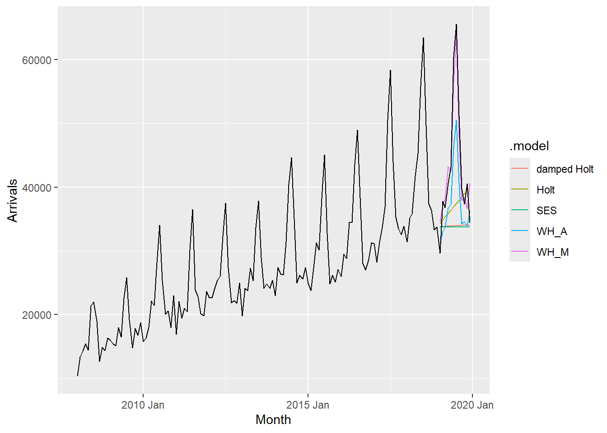
6.9 Fitting ETS automatically
fit_autoETS <- vietnam_train %>%
model(ETS(Arrivals))
fit_autoETS %>% report()Series: Arrivals
Model: ETS(M,A,M)
Smoothing parameters:
alpha = 0.1613503
beta = 0.0001021811
gamma = 0.0001030996
Initial states:
l[0] b[0] s[0] s[-1] s[-2] s[-3] s[-4] s[-5]
15001.12 212.3552 0.9167302 0.8311728 0.8739287 0.8690543 1.104668 1.485584
s[-6] s[-7] s[-8] s[-9] s[-10] s[-11]
1.311207 0.9917759 1.014187 0.8973028 0.8816768 0.8227129
sigma^2: 0.0046
AIC AICc BIC
2634.751 2640.119 2683.759 Checking the model assumptions with gg_tsresiduals().
gg_tsresiduals(fit_autoETS)
6.10 Forecast the future values
There’s bo need to show the front part of the trends - just show the last 2 cycles will do.
fit_autoETS %>%
forecast(h = "12 months") %>%
autoplot(vietnam_train)
6.11 Visualising AutoETS model with ggplot2
We can visualise relationship between the training data and forecasted values vs the hold-out data.
fc_autoETS <- fit_autoETS %>%
forecast(h = "12 months")
vietnam_ts %>%
ggplot(aes(x=`Month`,
y=Arrivals)) +
autolayer(fc_autoETS,
alpha = 0.6) +
geom_line(aes(
color = Type),
alpha = 0.8) +
geom_line(aes(
y = .mean,
colour = "Forecast"),
data = fc_autoETS) +
geom_line(aes(
y = .fitted,
colour = "Fitted"),
data = augment(fit_autoETS))
7. AutoRegressive Integrated Moving Average(ARIMA) Methods for Time Series Forecasting: fable (tidyverts) methods
7.1 Visualising Autocorrelations: feasts methods
vietnam_train %>%
gg_tsdisplay(plot_type='partial')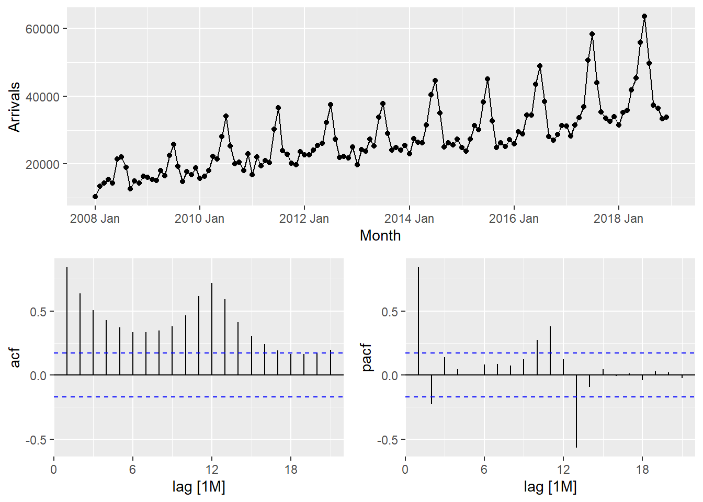
7.2 Visualising Autocorrelations: feasts methods
tsibble_longer %>%
filter(`Country` == "Vietnam") %>%
ACF(Arrivals) %>%
autoplot()
tsibble_longer %>%
filter(`Country` == "United Kingdom") %>%
ACF(Arrivals) %>%
autoplot()
7.3 Differencing: fable methods
Trend differencing:
gg_tsdisplay() shows the PACF after differencing with difference().
lag argument can be define to visualise if white noise presents.
tsibble_longer %>%
filter(Country == "Vietnam") %>%
gg_tsdisplay(difference(
Arrivals,
lag = 1),
plot_type='partial')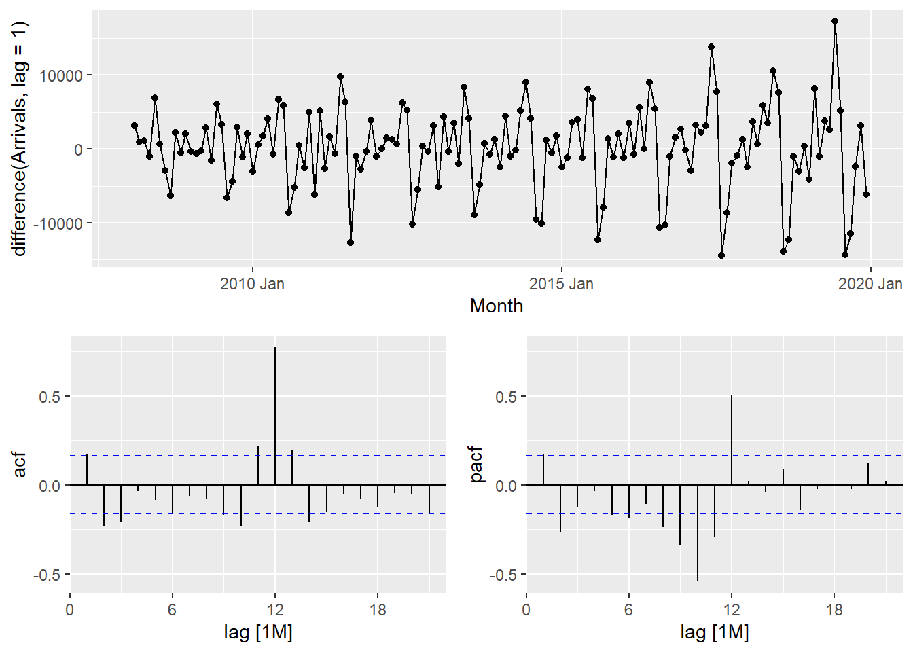
Seasoning differencing:
tsibble_longer %>%
filter(Country == "Vietnam") %>%
gg_tsdisplay(difference(
Arrivals,
difference = 12),
plot_type='partial')